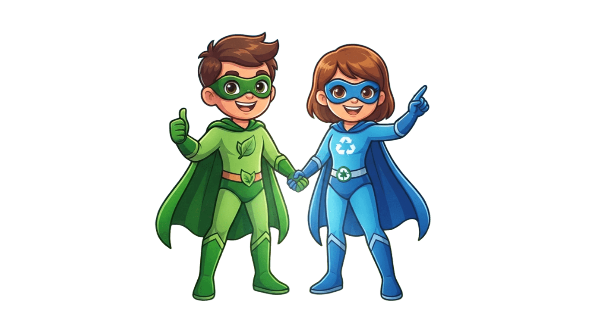
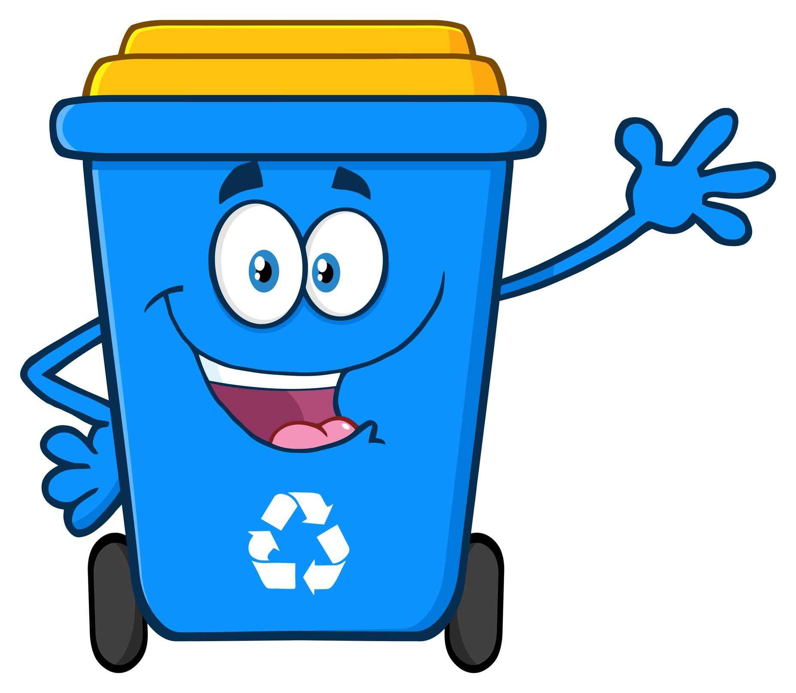
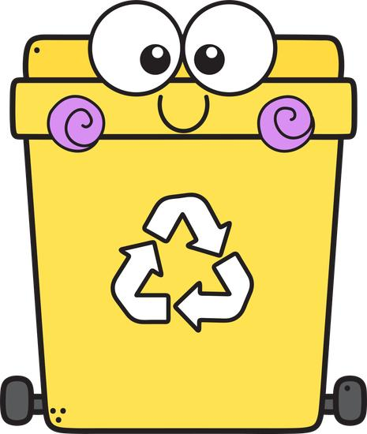
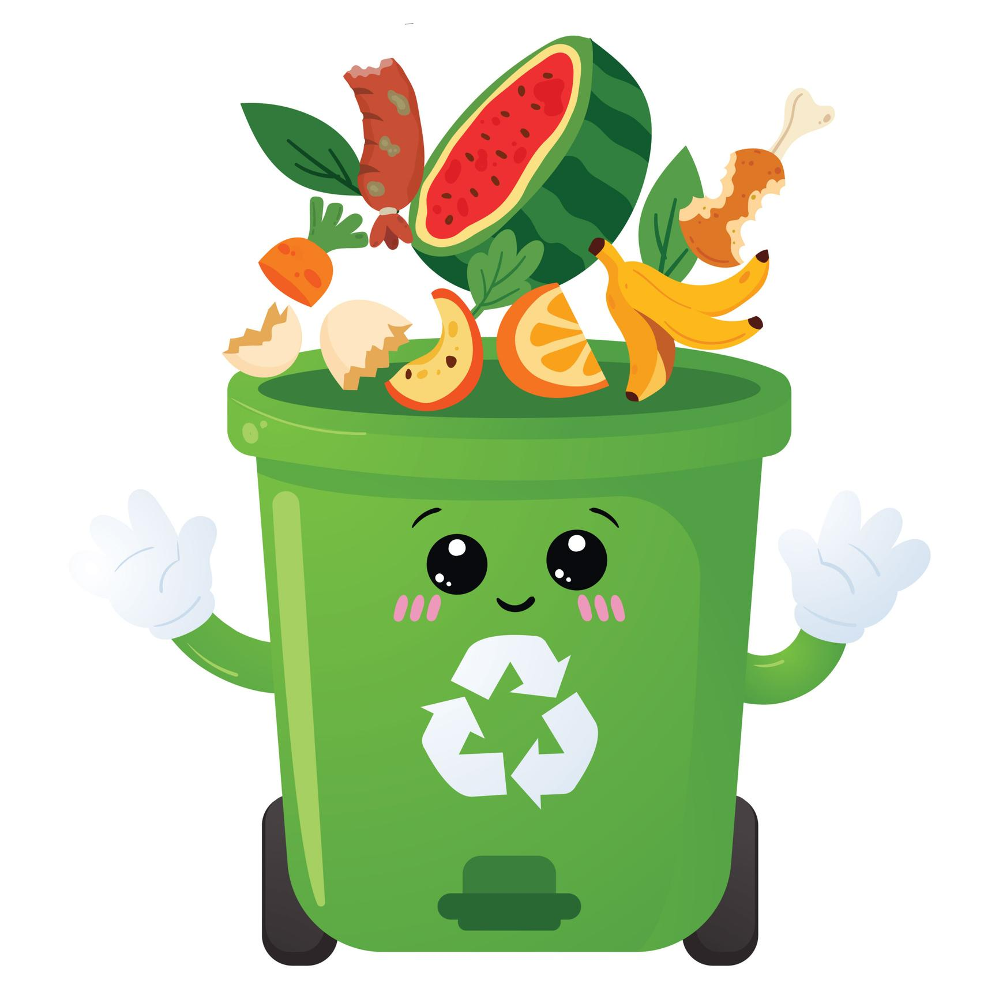
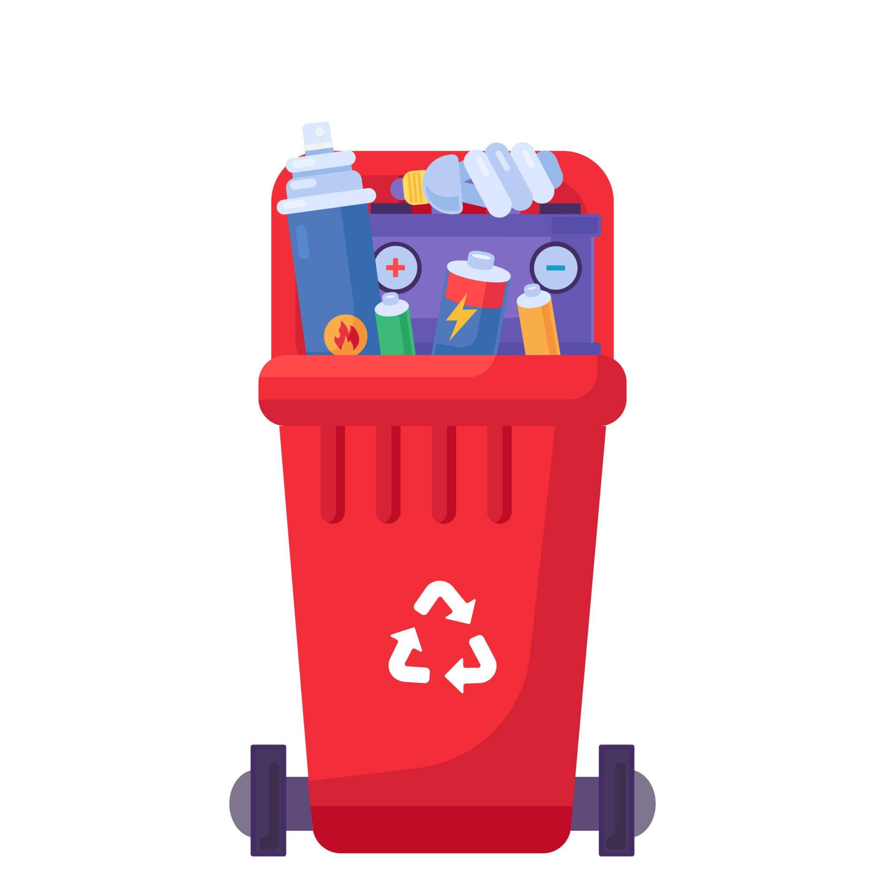

เรียนรู้เรื่องขยะ
รู้จักขยะ 4 ประเภทและถังแต่ละสี
มาช่วยกันแยกขยะให้ถูกถัง เปลี่ยนโลกให้สะอาดและน่าอยู่กันเถอะ!
จัดทำโดย ครูจองซ่า

รู้จักขยะ 4 ประเภทและถังแต่ละสี
เลือกขยะให้ถูกถัง เก็บคะแนนให้ได้มากที่สุด
ตอบคำถาม 10 ข้อ เพื่อพิชิตตำแหน่งฮีโร่
อ่านคำอธิบาย แล้วไปลองแยกขยะกันเลย!

ขยะที่รีไซเคิลไม่ได้และไม่เหมาะกับการทำปุ๋ย เช่น ซองขนมเปื้อนอาหารและกระดาษทิชชูใช้แล้ว

วัสดุที่นำกลับมาใช้ประโยชน์ได้ เช่น ขวดพลาสติกสะอาด กระดาษ และกระป๋องเครื่องดื่ม

เศษอาหาร เปลือกผลไม้ และเศษผัก เหมาะสำหรับจัดการเป็นปุ๋ยหมัก

เช่น ถ่านไฟฉายและหลอดไฟบางชนิด ควรแยกส่งจุดรับขยะอันตรายโดยเฉพาะ
ลากขยะไปยังถังที่ถูกต้อง หรือแตะขยะแล้วแตะถังขยะ
หมายเหตุ: ในเกมใช้ตัวอย่างขยะทั่วไปเพื่อการเรียนรู้ ขยะจริงควรแยกตามป้ายและแนวทางของท้องถิ่น
ตอบคำถามให้ครบ 10 ข้อ เพื่อรับดาวแห่งความรู้